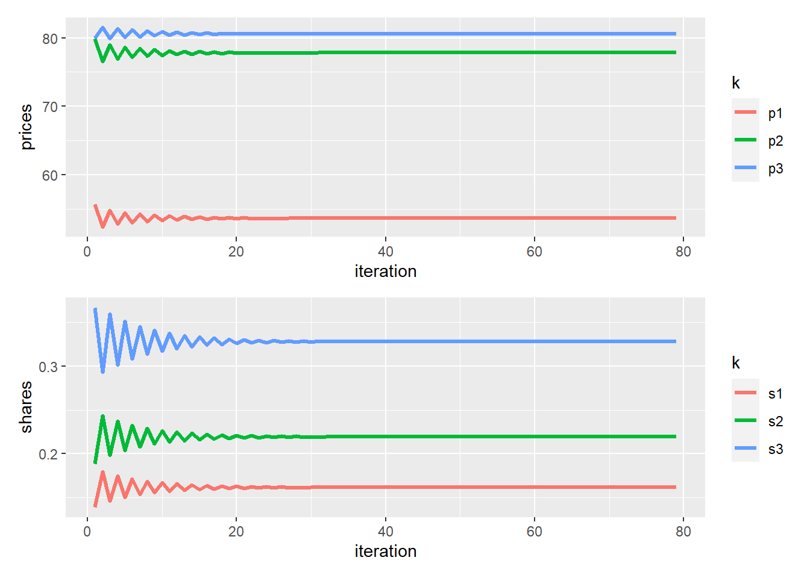

# 1. market shares
s <- c(0.2, 0.25, 0.3)
# outside option market share
(s_0 <- 1 - sum(s) )
## [1] 0.25
# 2. prices
p <- c(50, 75, 80)Multinomial Logit Example
introduction
In this document I’ll demonstrate merger simulation with a synthetic example. On the supply side assuming a differentiated Bertrand model and on the demand side assuming a multinomial logit demand function.
The Bertrand system of equations has 4 components:
(1) Market shares.
(2) Prices.
(3) Derivatives of the demand function with respect to the prices.
(4) Marginal costs of the firms.
Pre merger conditions
For the sake of demonstration the market shares chosen are 0.2, 0.25 and 0.3.
prices are 50, 75 and 80 correspondingly.
Calculation of derivatives
The logit derivative is a function of market shares and the consumer’s derivative with respect to the price - the model’s \(alpha\). we’ll choose \(alpha\) to be 0.1. In fact, this is a calibration of the system. One can estimate those parameters with a demand estimation (which is beyond the scope of this simple document).
# 3. derivatives
# choose alpha
alpha <- - 0.1
# derivatives are functions of market shares and alpha
# own derivative
(d_sj_d_pj <- alpha * (1-s) * s)
## [1] -0.0160 -0.0188 -0.0210
# cross derivative
(d_sk_d_pj <- - alpha * s %o% s)
## [,1] [,2] [,3]
## [1,] 0.004 0.00500 0.0060
## [2,] 0.005 0.00625 0.0075
## [3,] 0.006 0.00750 0.0090
# put own derivatives in diagonal
der <- d_sk_d_pj
diag(der) <- d_sj_d_pj
# final result
der
## [,1] [,2] [,3]
## [1,] -0.016 0.0050 0.0060
## [2,] 0.005 -0.0188 0.0075
## [3,] 0.006 0.0075 -0.0210Note that the diagonal is negative -> self elasticity is negative, and the off-diagonal are positive which means products are substitutes.
Solving the equation system for the marginal costs
As stated above, First order condition has 4 components.
We have supplied the market shares, the prices and the derivatives. Next, we solve the system for the marginal costs.
For the solution we create the “owner ship” matrix:
# 4. solving a system of equations for the marginal costs
# ownership matrix
(theta <- matrix( c(1,0,0,0,1,0,0,0,1), nrow = 3)) [,1] [,2] [,3]
[1,] 1 0 0
[2,] 0 1 0
[3,] 0 0 1# solve a system of linear equations
(mc <- solve(theta * der) %*% s + p ) [,1]
[1,] 37.5
[2,] 61.7
[3,] 65.7We can check the first order condition are valid.
# check that F.O.C's are met:
s + (theta * der) %*% (p - mc) [,1]
[1,] -0.0000000000000000278
[2,] 0.0000000000000000555
[3,] -0.0000000000000001110Merger simulate
A merger in the market
When a merger happens, the ownership of firms over the product set is changing. Next, we’ll assume that products 1 and 2 are now under the same ownership. For that, we update the ownership matrix. The 1st and 2nd elements 1st and 2nd rows of the matrix will equal to 1:
# new ownership matrix:
(theta_post <- matrix(c(1,1,0,1,1,0,0,0,1), nrow = 3)) [,1] [,2] [,3]
[1,] 1 1 0
[2,] 1 1 0
[3,] 0 0 1Changing the ownership matrix resembles the change in the incentives the merged firm forgo. The firm understands that when the price of product 1 goes up, some of the customers that choose to not buy it anymore will by product 2. The closer substitutes are the products the larger proportion of customers will diverge between product 1 to 2 and vice versa. Hence for those customers, the firm does not loose its sails. With that knowledge, the firm can raise the price up. The first order condition is not valid anymore because the old price is not the optimal price.
# FOC don't hold
s + (theta_post * der) %*% (p - mc) [,1]
[1,] 0.066666666666666624
[2,] 0.062500000000000056
[3,] -0.000000000000000111Fixed point iteration
This change in the merged firm incentives has a ripple effect on the entire market. The firm will raise its prices, some of the customers will leave its products and either buy it at the competitors or not buy it at all. To compute this, we need an iterative process that will end in a new equilibrium.
Assuming convexity and continuity of the equation system, we can find a solution and know it is unique.
according to the model , the average utility from product j is: \[ \delta_j = x \beta_j - \alpha p + \xi _j \]
For each product we calculate the average utility.
A change in price will change the utility from the product. This in turn, will be reflected in the demand function, the demand decreases when the price goes up and vice versa.
# delta = x * b - alpha * p
(delta <- log(s / s_0)) [1] -0.223 0.000 0.182exp(delta) / (1 + sum(exp(delta)))[1] 0.20 0.25 0.30Manual iteration
We’ll compute the first few iterations be hand to see how it converges.
In every iteration 4 stages will take place:
- Solve the firms first order conditions subject to market shares to find a new price vector.
- Calculate the change in the price vector compared to the pre-merger state.
- feed the new prices to consumer utility functions to get the change in utilities.
- Get the new market shares out from the demand function.
# the price update procedure:
# 1. solve FOC 1
(p1 <- as.vector(mc + (1/ - alpha) * (1 / (1 - theta_post %*% s))))[1] 55.7 79.8 80.0# 2. delta price
(d_p <- (p1 - p))[1] 5.68 4.85 0.00# 3. delta in utility
(d_delta <- d_p * alpha)[1] -0.568 -0.485 0.000# 4. solve demand for new utility
(s1 <- exp(delta + d_delta) / (1 + sum(exp(delta + d_delta))))[1] 0.139 0.188 0.367Get the results and compere to the pre merger status.
results <-rbind(c(s, p), c(s1, p1))
results [,1] [,2] [,3] [,4] [,5] [,6]
[1,] 0.200 0.250 0.300 50.0 75.0 80
[2,] 0.139 0.188 0.367 55.7 79.8 80Repeat the process several more times.
# solve FOC 2:
p2 <- as.vector(mc + (1/ -alpha) * (1/(1 - theta_post %*% s1)))
d_p <- (p2 - p)
d_delta <- d_p * alpha
# solve demand 2:
s2 <- exp(delta + d_delta) / (1 + sum(exp( delta + d_delta)))
results <- rbind(results, c(s2, p2))
# solve FOC 3:
p3 <- as.vector(mc + (1/ -alpha) * (1/(1 - theta_post %*% s2)))
d_p <- (p3 - p)
d_delta <- d_p * alpha
# solve demand 3:
s3 <- exp(delta + d_delta) / (1 + sum(exp( delta + d_delta)))
results <- rbind(results, c(s3, p3))
# solve FOC 4:
p4 <- as.vector(mc + (1/ -alpha) * (1/(1 - theta_post %*% s3)))
d_p <- (p4 - p)
d_delta <- d_p * alpha
# solve demand 3:
s4 <- exp(delta + d_delta) / (1 + sum(exp( delta + d_delta)))
results <- rbind(results, c(s4, p4))
# solve FOC 5:
p5 <- as.vector(mc + (1/ -alpha) * (1/(1 - theta_post %*% s4)))
d_p <- (p5 - p)
d_delta <- d_p * alpha
# solve demand 3:
s5 <- exp(delta + d_delta) / (1 + sum(exp( delta + d_delta)))
results <- rbind(results, c(s5, p5))
# solve FOC 6:
p6 <- as.vector(mc + (1/ -alpha) * (1/(1 - theta_post %*% s5)))
d_p <- (p6 - p)
d_delta <- d_p * alpha
# solve demand
s6 <- exp(delta + d_delta) / (1 + sum(exp( delta + d_delta)))
results <- rbind(results, c(s6, p6))
# solve FOC 7:
p7 <- as.vector(mc + (1/ -alpha) * (1/(1 - theta_post %*% s6)))
d_p <- (p7 - p)
d_delta <- d_p * alpha
# solve demand
s7 <- exp(delta + d_delta) / (1 + sum(exp( delta + d_delta)))
results <- rbind(results, c(s7, p7))
# solve FOC 8:
p8 <- as.vector(mc + (1/ -alpha) * (1/(1 - theta_post %*% s7)))
d_p <- (p8 - p)
d_delta <- d_p * alpha
# solve demand
s8 <- exp(delta + d_delta) / (1 + sum(exp( delta + d_delta)))In the results matrix, columns 1-3 are market shares and columns 4-6 are the prices.
every iteration the jumps in the values decreases.
results <- rbind(results, c(s8, p8))
colnames(results) <- c('s1', 's2', 's3', 'p1', 'p2', 'p3')
results s1 s2 s3 p1 p2 p3
[1,] 0.200 0.250 0.300 50.0 75.0 80.0
[2,] 0.139 0.188 0.367 55.7 79.8 80.0
[3,] 0.179 0.244 0.293 52.4 76.5 81.5
[4,] 0.146 0.198 0.360 54.8 79.0 79.9
[5,] 0.175 0.237 0.301 52.7 76.9 81.3
[6,] 0.150 0.204 0.352 54.5 78.7 80.0
[7,] 0.171 0.232 0.308 53.0 77.1 81.1
[8,] 0.153 0.208 0.346 54.3 78.4 80.2
[9,] 0.169 0.229 0.314 53.1 77.3 81.0We can see where it’s going. the shares of products 1 and 2 are decreasing and product 3 is increasing. All prices are going up.
Lets calculate the new equilibrium.
While loop
We’ll limit the number of iterations with max_iter, and document the convergence process in a convergence_matrix .
max_iter <- 82
s_in <- s
i <- 0
s_delta_norm <- 1
convergence_matrix <- matrix(nrow = max_iter, ncol = length(s) * 2 + 2)
while(s_delta_norm > 1e-6 & i < max_iter){
i <- i + 1
# solve F.O.C
( p_new <- as.vector(mc + (1/ - alpha ) * ( 1 / (1 - theta_post %*% s_in) )))
# change in utility
d_delta <- (p_new - p) * alpha
# solve demand system
s_new <- exp(delta + d_delta) / (1 + sum(exp(delta + d_delta)))
# norm of change in market shares
(s_delta_norm <- sqrt(sum((s_in - s_new) ^ 2)))
# save resault for next iteration
s_in <- s_new
convergence_matrix[i, ] <- c(s_new, p_new, s_delta_norm, i)
}
colnames(convergence_matrix) <- c("s1", "s2", "s3", "p1", "p2", "p3", "norm", "iteration")
convergence_matrix s1 s2 s3 p1 p2 p3 norm iteration
[1,] 0.139 0.188 0.367 55.7 79.8 80.0 0.109827719 1
[2,] 0.179 0.244 0.293 52.4 76.5 81.5 0.101188131 2
[3,] 0.146 0.198 0.360 54.8 79.0 79.9 0.087867750 3
[4,] 0.175 0.237 0.301 52.7 76.9 81.3 0.076132778 4
[5,] 0.150 0.204 0.352 54.5 78.7 80.0 0.065389010 5
[6,] 0.171 0.232 0.308 53.0 77.1 81.1 0.056301895 6
[7,] 0.153 0.208 0.346 54.3 78.4 80.2 0.048324608 7
[8,] 0.169 0.229 0.314 53.1 77.3 81.0 0.041574711 8
[9,] 0.155 0.211 0.341 54.1 78.3 80.3 0.035693191 9
[10,] 0.167 0.227 0.317 53.3 77.4 80.9 0.030698062 10
[11,] 0.157 0.213 0.338 54.0 78.1 80.4 0.026361844 11
[12,] 0.165 0.225 0.320 53.4 77.5 80.8 0.022667853 12
[13,] 0.158 0.215 0.335 53.9 78.1 80.4 0.019469604 13
[14,] 0.164 0.223 0.322 53.4 77.6 80.8 0.016738813 14
[15,] 0.159 0.216 0.334 53.8 78.0 80.5 0.014379099 15
[16,] 0.164 0.222 0.324 53.5 77.7 80.7 0.012360880 16
[17,] 0.160 0.217 0.332 53.8 77.9 80.5 0.010619418 17
[18,] 0.163 0.222 0.325 53.5 77.7 80.7 0.009128122 18
[19,] 0.160 0.218 0.331 53.7 77.9 80.5 0.007842695 19
[20,] 0.163 0.221 0.326 53.6 77.7 80.7 0.006740912 20
[21,] 0.160 0.218 0.331 53.7 77.9 80.6 0.005791974 21
[22,] 0.162 0.221 0.327 53.6 77.8 80.7 0.004978054 22
[23,] 0.161 0.218 0.330 53.7 77.9 80.6 0.004277453 23
[24,] 0.162 0.220 0.327 53.6 77.8 80.6 0.003676234 24
[25,] 0.161 0.219 0.330 53.7 77.9 80.6 0.003158943 25
[26,] 0.162 0.220 0.327 53.6 77.8 80.6 0.002714868 26
[27,] 0.161 0.219 0.329 53.7 77.8 80.6 0.002332905 27
[28,] 0.162 0.220 0.328 53.6 77.8 80.6 0.002004913 28
[29,] 0.161 0.219 0.329 53.7 77.8 80.6 0.001722864 29
[30,] 0.162 0.220 0.328 53.6 77.8 80.6 0.001480620 30
[31,] 0.161 0.219 0.329 53.7 77.8 80.6 0.001272343 31
[32,] 0.162 0.220 0.328 53.6 77.8 80.6 0.001093433 32
[33,] 0.161 0.219 0.329 53.7 77.8 80.6 0.000939630 33
[34,] 0.162 0.220 0.328 53.6 77.8 80.6 0.000807498 34
[35,] 0.161 0.219 0.329 53.7 77.8 80.6 0.000693919 35
[36,] 0.162 0.220 0.328 53.6 77.8 80.6 0.000596336 36
[37,] 0.161 0.219 0.329 53.7 77.8 80.6 0.000512461 37
[38,] 0.162 0.219 0.328 53.6 77.8 80.6 0.000440394 38
[39,] 0.161 0.219 0.329 53.7 77.8 80.6 0.000378453 39
[40,] 0.162 0.219 0.328 53.6 77.8 80.6 0.000325231 40
[41,] 0.161 0.219 0.329 53.7 77.8 80.6 0.000279488 41
[42,] 0.162 0.219 0.328 53.6 77.8 80.6 0.000240183 42
[43,] 0.161 0.219 0.329 53.7 77.8 80.6 0.000206402 43
[44,] 0.161 0.219 0.328 53.6 77.8 80.6 0.000177375 44
[45,] 0.161 0.219 0.328 53.7 77.8 80.6 0.000152428 45
[46,] 0.161 0.219 0.328 53.6 77.8 80.6 0.000130991 46
[47,] 0.161 0.219 0.328 53.7 77.8 80.6 0.000112568 47
[48,] 0.161 0.219 0.328 53.6 77.8 80.6 0.000096737 48
[49,] 0.161 0.219 0.328 53.7 77.8 80.6 0.000083132 49
[50,] 0.161 0.219 0.328 53.6 77.8 80.6 0.000071440 50
[51,] 0.161 0.219 0.328 53.7 77.8 80.6 0.000061393 51
[52,] 0.161 0.219 0.328 53.6 77.8 80.6 0.000052759 52
[53,] 0.161 0.219 0.328 53.7 77.8 80.6 0.000045339 53
[54,] 0.161 0.219 0.328 53.7 77.8 80.6 0.000038962 54
[55,] 0.161 0.219 0.328 53.7 77.8 80.6 0.000033483 55
[56,] 0.161 0.219 0.328 53.7 77.8 80.6 0.000028774 56
[57,] 0.161 0.219 0.328 53.7 77.8 80.6 0.000024727 57
[58,] 0.161 0.219 0.328 53.7 77.8 80.6 0.000021249 58
[59,] 0.161 0.219 0.328 53.7 77.8 80.6 0.000018261 59
[60,] 0.161 0.219 0.328 53.7 77.8 80.6 0.000015693 60
[61,] 0.161 0.219 0.328 53.7 77.8 80.6 0.000013486 61
[62,] 0.161 0.219 0.328 53.7 77.8 80.6 0.000011589 62
[63,] 0.161 0.219 0.328 53.7 77.8 80.6 0.000009959 63
[64,] 0.161 0.219 0.328 53.7 77.8 80.6 0.000008559 64
[65,] 0.161 0.219 0.328 53.7 77.8 80.6 0.000007355 65
[66,] 0.161 0.219 0.328 53.7 77.8 80.6 0.000006320 66
[67,] 0.161 0.219 0.328 53.7 77.8 80.6 0.000005432 67
[68,] 0.161 0.219 0.328 53.7 77.8 80.6 0.000004668 68
[69,] 0.161 0.219 0.328 53.7 77.8 80.6 0.000004011 69
[70,] 0.161 0.219 0.328 53.7 77.8 80.6 0.000003447 70
[71,] 0.161 0.219 0.328 53.7 77.8 80.6 0.000002962 71
[72,] 0.161 0.219 0.328 53.7 77.8 80.6 0.000002546 72
[73,] 0.161 0.219 0.328 53.7 77.8 80.6 0.000002188 73
[74,] 0.161 0.219 0.328 53.7 77.8 80.6 0.000001880 74
[75,] 0.161 0.219 0.328 53.7 77.8 80.6 0.000001616 75
[76,] 0.161 0.219 0.328 53.7 77.8 80.6 0.000001388 76
[77,] 0.161 0.219 0.328 53.7 77.8 80.6 0.000001193 77
[78,] 0.161 0.219 0.328 53.7 77.8 80.6 0.000001025 78
[79,] 0.161 0.219 0.328 53.7 77.8 80.6 0.000000881 79
[80,] NA NA NA NA NA NA NA NA
[81,] NA NA NA NA NA NA NA NA
[82,] NA NA NA NA NA NA NA NACompare the data before the merger with the prediction of the simulation about the merger effect on prices and market shares
# attach preconditions with last row without NA's in the matrix
final_resault <-
convergence_matrix[tail(which(rowSums(!is.na(convergence_matrix)) > 0), 1),]
rbind(c(results[1,],norm = NA,iteration = 0),final_resault) s1 s2 s3 p1 p2 p3 norm iteration
0.200 0.250 0.300 50.0 75.0 80.0 NA 0
final_resault 0.161 0.219 0.328 53.7 77.8 80.6 0.000000881 79The market share of the outside option has increased:
c(before = s_0, after = 1 - sum(final_resault[1:3]))before after
0.250 0.291 Present convergence process on a plot
pacman::p_load(tidyverse, patchwork)
p1 <- data.frame(convergence_matrix) %>%
select(iteration, p1, p2, p3) %>%
gather(k = "k", v = "prices", 2:4) %>%
ggplot(aes(x = iteration, y = prices, color = k)) + geom_line(size = 1.2)
p2 <- data.frame(convergence_matrix) %>%
select(iteration, s1, s2, s3) %>%
gather(k = "k", v = "shares", 2:4) %>%
ggplot(aes(x = iteration, y = shares, color = k)) + geom_line(size =1.2)
p1 / p2
First order conditions:
s_in + (theta_post*der) %*% (p_new - mc) [,1]
[1,] -0.01620
[2,] -0.00271
[3,] 0.01573That’s it.
In the next example we’ll show a bit more complicated example of One level Nested logit. Also, the code will be warped up in functions for production.